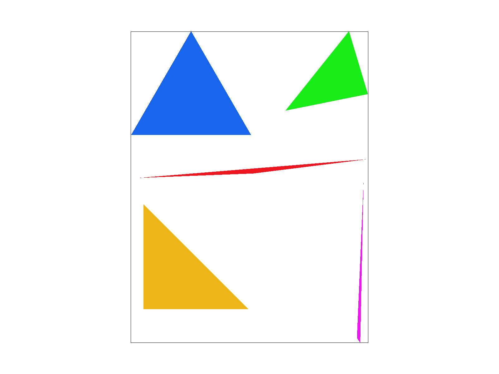
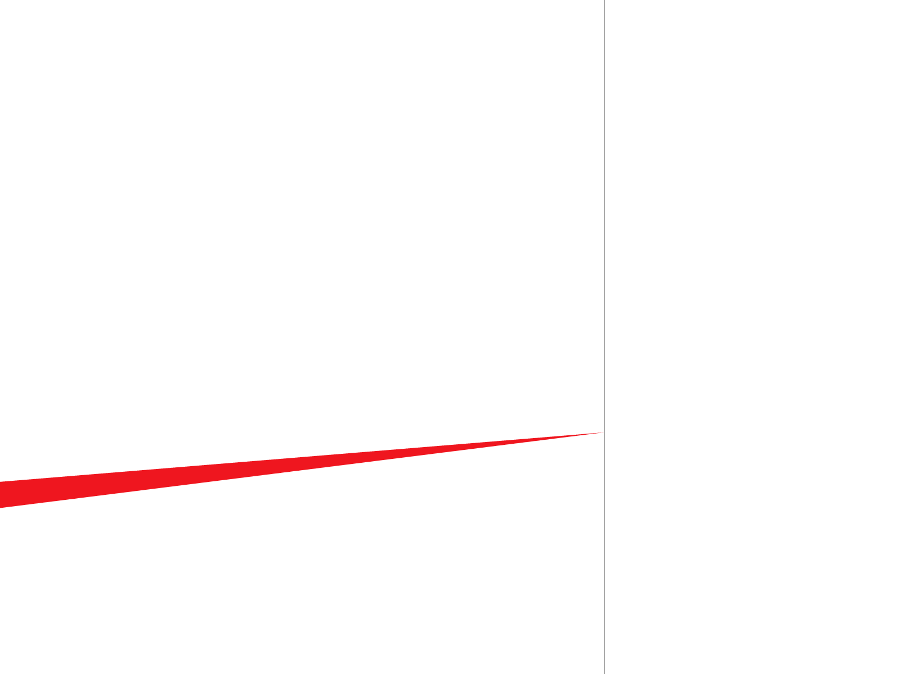
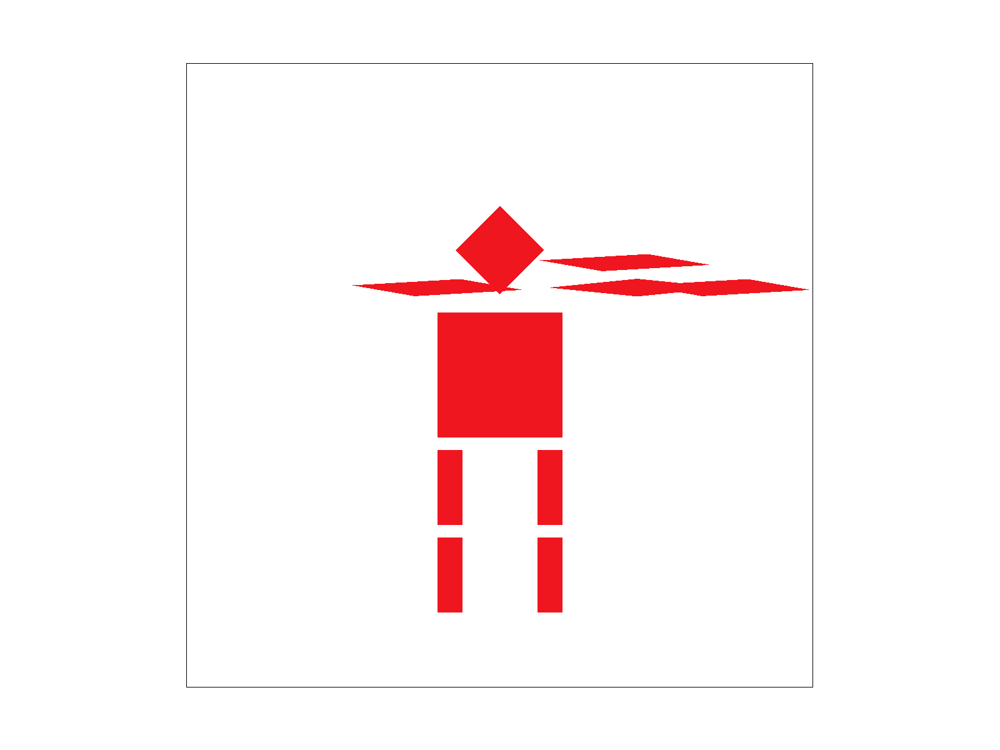
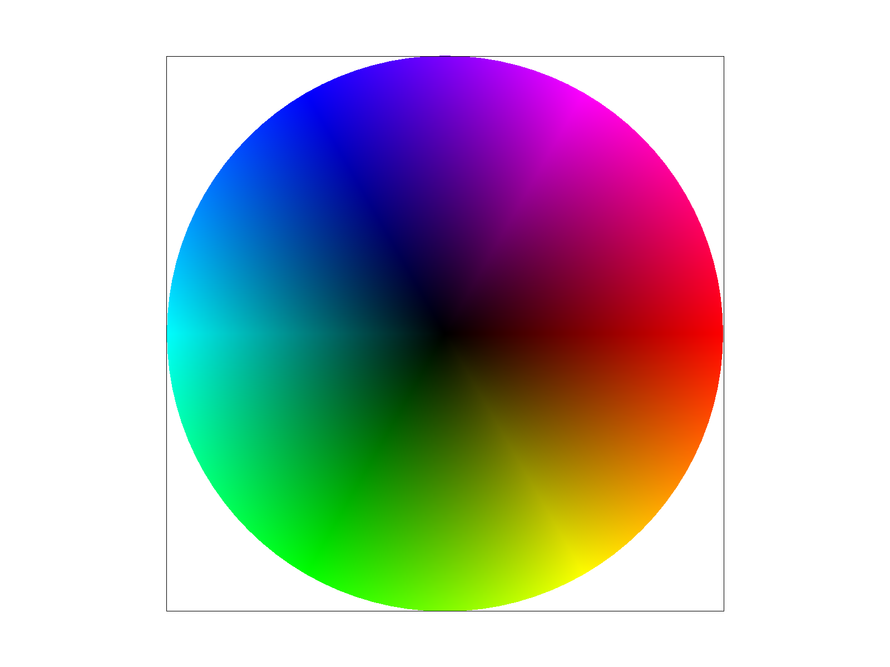
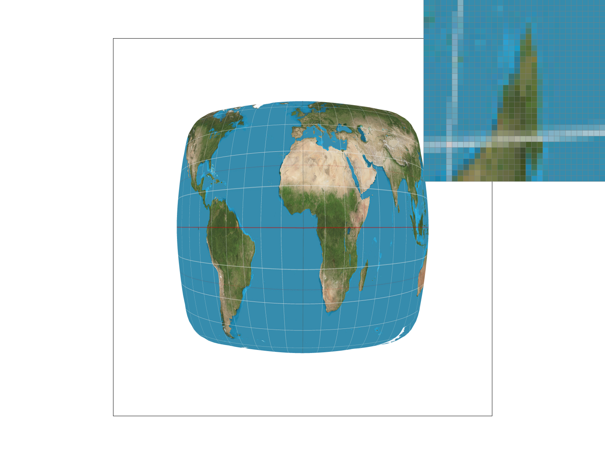
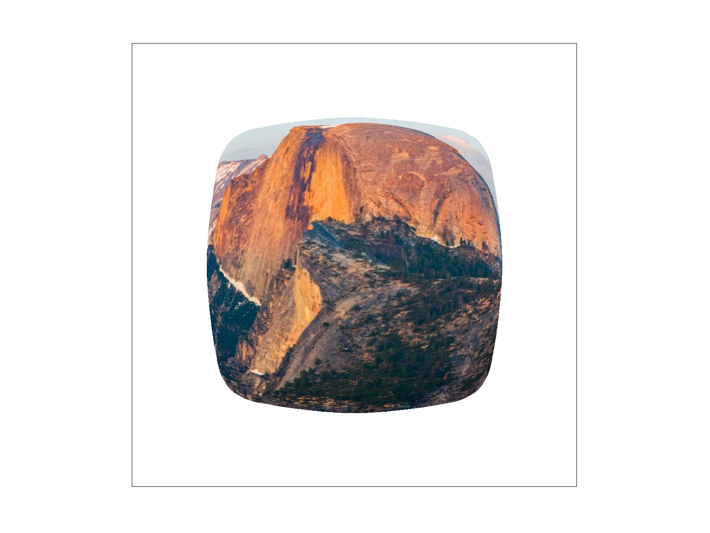
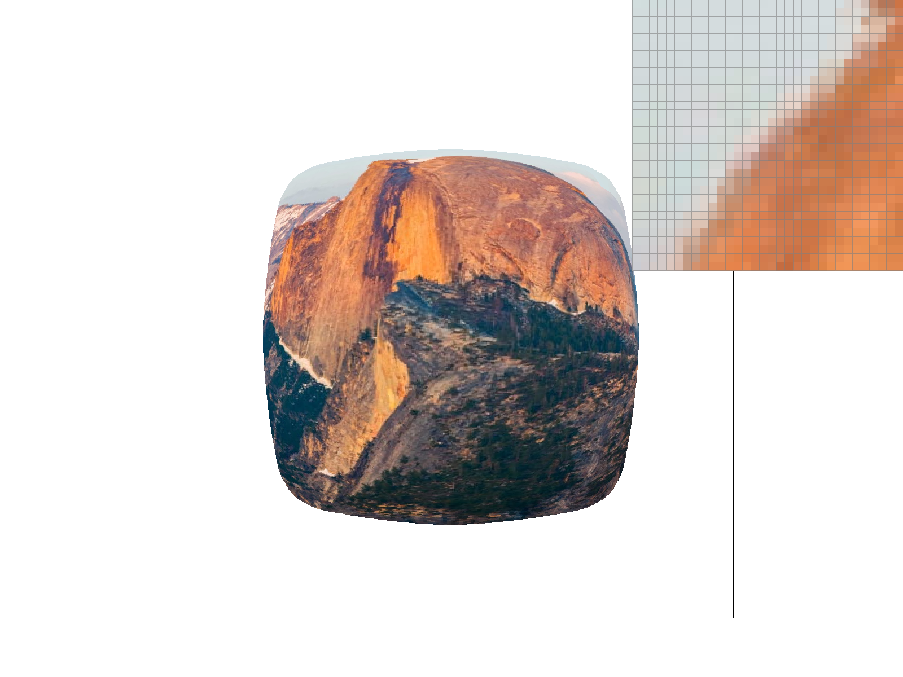
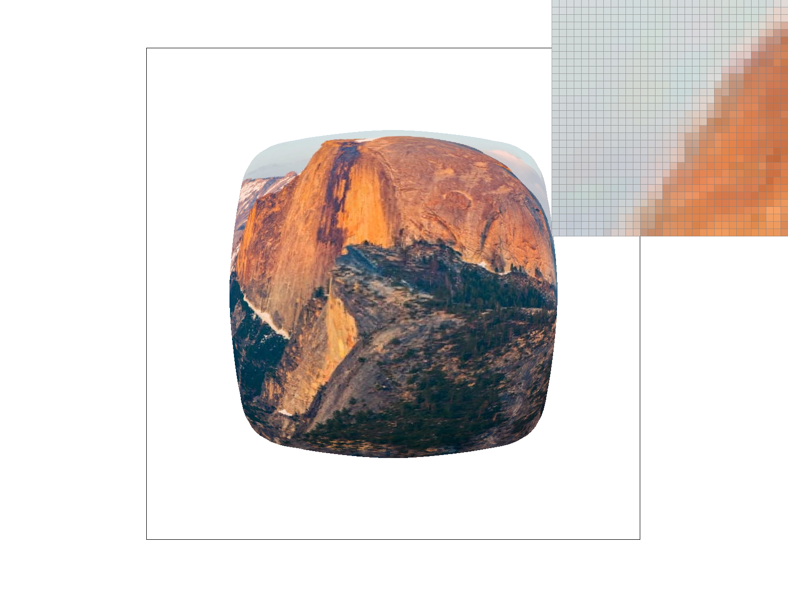

CS184/284A Fall 2026 Homework 1 Write-Up
Link to webpage: atsushi-cs184.github.io
Link to GitHub repository: Hw 1 Repo

Overview
In this homework I built a rasterizer that turns SVG files into images, starting from single-color triangles and working up to textured triangles with antialiasing. I first rasterized triangles by testing sample points against the triangle's three edges. I then added supersampling to smooth jagged edges, and support for SVG transforms, which I used to pose my own cubeman. Next I used barycentric coordinates to blend colors across a triangle. Finally I did texture mapping, with nearest and bilinear pixel sampling and mipmap level sampling.
The biggest thing I took away is that most of rendering comes down to sampling. Almost every artifact I ran into, whether jagged triangle edges, blocky magnified textures, or shimmering in shrunk textures, came from taking too few samples of something continuous. Each fix was a different way to sample better: take more samples per pixel, blend between neighboring texels, or read from a pre-averaged mipmap level. It was also interesting to see that these fixes trade speed, memory, and sharpness against each other, so none of them is the best choice in every case.
Task 1: Drawing Single-Color Triangles
In this task, I implemented triangle rasterization by testing sample points within the triangle's bounding box.
First, I computed the bounding box from the minimum and maximum x and y coordinates of the three vertices,
flooring the minimums and taking the ceiling of the maximums so that every pixel the triangle could touch is covered.
Next, I normalized the triangle to counter-clockwise winding. I computed the triangle's signed area using a
2D cross product, and if it was negative, I swapped the second and third vertices. Degenerate triangles
(zero area) are skipped. Normalizing the winding means a point is inside the triangle exactly when it lies on
the left side of all three edges, so a single inside test works for triangles given in either order.
Finally, I looped over every pixel in the bounding box and sampled at its center, (x + 0.5, y + 0.5). For each
sample, I evaluated the three line tests: the cross product of each edge vector with the vector from that edge's
starting vertex to the sample point. If all three results were non-negative, the sample is inside the triangle
(or on its boundary), and I filled that pixel with the triangle's color.
Here is an example 2x2 gridlike structure using an HTML table. Each tr is a row and each td is a column in that row. You might find this useful for framing and showing your result images in an organized fashion.

|
 |
Task 2: Antialiasing by Supersampling
Supersampling works by evaluating coverage and color at several points inside each pixel instead of just one. With a sample rate of N, I treat each pixel as an s × s grid of subsamples, where s = √N, and test each subsample's position (the center of its sub-cell) against the triangle independently.
The main data structure is the sample buffer, which holds N colors per pixel instead of
one. The subsample (i, j) of pixel (x, y) is stored at index
(y * width + x) * sample_rate + (j * s + i). The frame buffer stays at one
color per pixel and is only filled when the sample buffer is resolved.
Supersampling is useful for antialiasing because a single sample per pixel makes a binary decision: the pixel is either fully inside a triangle or fully outside it. Along an edge, this produces jagged staircase artifacts (jaggies), since the true edge only covers part of the pixel. Multiple samples per pixel estimate the fraction of the pixel the triangle actually covers, so edge pixels get an intermediate color instead of an all-or-nothing one.
Modifications to the pipeline:
-
Resizing: the sample buffer is allocated (and reallocated whenever the
sample rate changes) to
width * height * sample_rateentries. - Rasterization: each triangle function loops over the pixels in the bounding box, then over the subsamples in each pixel. The inside test and any interpolation (barycentric color, or UV plus texture lookup) are computed at the subsample's position rather than the pixel's, and the result is written to that subsample's slot in the sample buffer.
-
Resolving:
resolve_to_framebufferaverages thesample_ratesubsamples of each pixel into a single color and writes it to the frame buffer. Averaging happens only here, because different triangles can cover different subsamples of the same pixel and every triangle has to be drawn first. - Clearing: the sample buffer is reset to the background color each frame.
To antialias a triangle edge, consider a pixel that the edge cuts through so that 3 of its 4 subsamples are inside the triangle. Those three hold the triangle's color and the fourth holds the background, so the resolved pixel is 75% triangle color and 25% background. This produces a smooth gradient along the edge instead of a hard staircase, which acts as a low-pass filter on the high-frequency edge signal. The cost is memory and runtime that scale by a factor of the sample rate.
|
|
|
 |
Task 3: Transforms
For my version of cubeman (saved as my_robot.svg), I was trying to make the robot dab.
I kept the original torso, head, and legs, and only changed the arms. In a dab, one arm is thrown out straight at an
angle while the other is bent up across the face, so I rebuilt each arm out of two segments that could be positioned
and angled independently instead of the straight horizontal arms from the original robot.
Each arm segment starts as the same unit square made of two triangles. I first rotated the square (60° or 45°),
then squashed it with a non-uniform scale of (1, 0.1) so it became a long, thin, slanted bar, and finally translated it
into place next to the shoulders. Because the scale is applied after the rotation, the square gets sheared into a thin
parallelogram rather than just a rotated rectangle, which gave the arms their pointed, slanted look. Both segments of
an arm sit inside a shared group translated to that shoulder, and the second segment gets an extra translation on top of
that, so moving the shoulder group moves the whole arm together, like a forearm attached to an upper arm.


Task 4: Barycentric coordinates
Barycentric coordinates describe a point inside a triangle as a weighted average of the triangle's three vertices. For a triangle with vertices A, B, and C, any point P can be written as P = αA + βB + γC, where α + β + γ = 1. Each weight says how much a vertex "pulls" on the point: at vertex A the weights are (1, 0, 0), halfway along edge AB they are (0.5, 0.5, 0), and at the centroid they are (1/3, 1/3, 1/3). The closer P is to a vertex, the larger that vertex's weight.
Geometrically, each weight is a ratio of areas. α is the area of the sub-triangle PBC (the one opposite A) divided by the area of the whole triangle ABC, and β and γ work the same way with the other two sub-triangles. Since the three sub-triangles always add up to the whole triangle, the weights always sum to 1. A negative weight means P is on the wrong side of an edge, so the same weights also give a test for whether a point is inside the triangle: all three must be ≥ 0.
This is useful for graphics because the weights can interpolate any per-vertex attribute. If A, B, and C have colors c0, c1, and c2, then the color at P is αc0 + βc1 + γc2. In my rasterizer I compute α, β, and γ for every subsample position inside the triangle and use them to blend the vertex colors. The same weights interpolate texture coordinates (u, v) for textured triangles.
The image below is my rasterizer's output for a single triangle with a red, a green, and a blue vertex. Each vertex is pure at its own corner, and the colors blend smoothly toward the other two vertices, because the weights change linearly across the triangle. At the center, all three weights are equal, so the color is an even mix of red, green, and blue.

Task 5: "Pixel sampling" for texture mapping
Pixel sampling is how we decide what color a screen sample should get from a texture. Every vertex of a textured triangle has a (u, v) coordinate that points to a spot in the texture image, where (0, 0) is one corner of the texture and (1, 1) is the opposite corner. When a sample on the screen lands inside the triangle, we work out which (u, v) it corresponds to and then look up the texture there. The catch is that (u, v) almost never lands exactly on the center of a texel, so we need a rule for turning a continuous texture position into a color. That rule is the pixel sampling method.
To implement texture mapping, I reused the loop from my earlier triangle functions: for
every subsample inside the triangle's bounding box, I compute its barycentric
coordinates α, β, and γ. If all three are non-negative, the subsample is
inside the triangle, and I use the same weights to interpolate the vertices' texture
coordinates: u = αu0 + βu1 + γu2 and v = αv0 + βv1 +
γv2. I store (u, v) and the selected sampling modes in a
SampleParams struct, pass it to Texture::sample, and write the
returned color into that subsample's slot in the sample buffer.
The two pixel sampling methods differ in how they turn (u, v) into a color:
- Nearest: I scale (u, v) by the texture's width and height to get a position in texel units, floor it to get the texel that position falls in, clamp it to the texture's bounds, and return that single texel's color. This is fast, one lookup per sample, but when the texture is magnified many screen pixels map to the same texel, so the result looks blocky. When the texture is shrunk, neighboring pixels can jump between very different texels, which causes jaggies and shimmering.
- Bilinear: I scale (u, v) to texel units and subtract 0.5 so the position is measured relative to texel centers. I then take the four texels surrounding that point (clamped to the texture's bounds) and blend them by how close the point is to each one. First I interpolate horizontally across the top pair and the bottom pair using the fractional x offset, then interpolate between those two results vertically using the fractional y offset. This costs four lookups instead of one, but the color changes smoothly between texels, so magnified textures look smooth instead of blocky and thin details don't break up as badly.
|
|
|
|
|
 |
Task 6: "Level Sampling" with mipmaps for texture mapping
Level sampling deals with textures that are shrunk on screen. When a triangle is far away or seen at a steep angle, a single screen pixel can cover many texels, but pixel sampling only reads one texel (or four for bilinear) from the full-resolution texture. It effectively skips most of the texels in that pixel's footprint, which causes aliasing such as moiré patterns and shimmering. A mipmap fixes this by storing the texture at a series of levels, where each level is half the width and height of the one before and every texel is an average of the texels it replaces. Level sampling means choosing the mipmap level whose texel size roughly matches the screen pixel's footprint, so that one lookup already stands for the average over the whole area the pixel covers.
To pick a level, I need to know how fast (u, v) changes from one screen pixel to the
next. In my textured triangle function, I compute the barycentric coordinates again at
the points one pixel to the right, (x + 1, y), and one pixel down, (x, y + 1), and use
them to interpolate (u, v) at both points. Subtracting the (u, v) at the current sample
gives the differentials du/dx, dv/dx, du/dy, and dv/dy, which I store in
SampleParams. In Texture::get_level, I multiply these by the
texture's width and height to put them in texel units, take L as the longer of the two
vectors, and compute the level as log2(L). If L is at most 1 the texture
isn't being shrunk, so I return level 0. I also clamp the result to the last mipmap
level.
Texture::sample then uses the level sampling mode:
- Zero: always sample level 0, the full-resolution texture.
- Nearest: round the computed level to the nearest integer and sample that level.
- Linear: sample the two levels on either side of the computed level and blend them by the fractional part. For example, level 2.3 gives 70% of level 2 and 30% of level 3. Combined with bilinear pixel sampling, this is trilinear filtering.
Each lookup inside a level still uses whichever pixel sampling method (nearest or bilinear) is selected.
Tradeoffs between the three techniques:
-
Supersampling (samples per pixel) is the most powerful and the most
expensive. The sample buffer holds
width * height * sample_ratecolors, so memory grows linearly with the sample rate. The inside test, barycentric coordinates, and texture lookup are also repeated for every subsample, so rendering is roughlysample_ratetimes slower. In return, it is the only one of the three that smooths jagged triangle edges, and it also reduces texture aliasing because each pixel averages several texture lookups. - Pixel sampling uses no extra memory. Nearest is one texel read per sample. Bilinear is four reads plus a few multiplies, which is slightly slower but much smoother when a texture is magnified. It only looks at the four texels around one point, so it can't fix aliasing when many texels fall inside one pixel, and it does nothing for triangle edges.
- Level sampling costs extra memory for the mipmap. Each level is a quarter the size of the one before, so all the levels together add about one third to the texture's memory. It is also a bit slower per sample, because it computes the (u, v) differentials and a log2. Linear level sampling reads two levels, doubling the lookups (eight texel reads with bilinear). It is very effective against aliasing in shrunk or distant textures, since each lookup is already an average over the pixel's footprint. However, it picks a level from the longer differential, so it can over-blur surfaces viewed at an angle, and like pixel sampling it doesn't antialias triangle edges.
|
 |
|
|
|
 |
|
|
 |
|
|
|